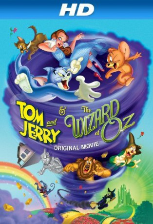

gesehen am 14.07.2015
gesehen am 14.07.2015Alternativ: Tom and Jerry & The Wizard of Oz gesehen am 14.07.2015
 
 IMDB-Wertung: 6.5 / 10
IMDB-Wertung: 6.5 / 10  Metascore:
Metascore: 
Ein Tornado sorgt dafür, dass das Mädchen Dorothy aus Kansas, ihr Hund Toto, Kater Tom und Maus Jerry im wundersamen Land Oz hinter dem Regenbogen landen. Gefolgt von Tom und Jerry bricht Dorothy auf der gelben Ziegelsteinstraße Richtung Smaragdstadt auf, wo der Zauberer von Oz hausen soll, der sie wieder in ihre Heimat versetzen kann. Unterwegs schließt Dorothy Bekanntschaft mit dem Blechmann, der Vogelscheuche und dem furchtsamen Löwen. Gemeinsam müssen sie gegen die böse Hexe des Westens antreten, die es auf Dorothys Schuhe abgesehen hat.
Jahr: 2011
Dauer: 56 Minuten
FSK: o.Al.
Land: USA Studio: Warner Home VideoTonspuren:
Untertitel:
Auflösung: SD (672x368) Größe: 799 MB
Genre: Familie
Regisseur: Spike Brandt, Tony Cervone
Drehbuch: Gene Grillo
Soundtrack: Michael Tavera
Darsteller:
 Grey Griffin als Dorothy
Grey Griffin als Dorothy Joe Alaskey als The Wizard of Oz / Butch / Droopy
Joe Alaskey als The Wizard of Oz / Butch / Droopy Michael Gough als Scarecrow
Michael Gough als Scarecrow Rob Paulsen als The Tin Man
Rob Paulsen als The Tin Man Todd Stashwick als The Cowardly Lion
Todd Stashwick als The Cowardly Lion Frances Conroy als Auntie Em / Glinda
Frances Conroy als Auntie Em / Glinda Laraine Newman als The Wicked Witch of The West / Miss Gulch
Laraine Newman als The Wicked Witch of The West / Miss Gulch Stephen Root als Uncle Henry / Crows
Stephen Root als Uncle Henry / Crows Kath Soucie als Tuffy the Munchkin Mouse
Kath Soucie als Tuffy the Munchkin Mouse Billy West als Tom , uncredited
Billy West als Tom , uncredited Bob Bergen als Jerry , uncredited
Bob Bergen als Jerry , uncreditedDatei: X:\Kinder Collections\Tom und Jerry\Tom und Jerry - Der Zauberer von Oz (2011, FSKo.Al., 672x368).avi seit 12.07.2015
Festplatte: Kinder-Filme+Trick
 Es gibt insgesamt 16 Filme in der Gruppe 'Kinder Collections\Tom und Jerry'
Es gibt insgesamt 16 Filme in der Gruppe 'Kinder Collections\Tom und Jerry'